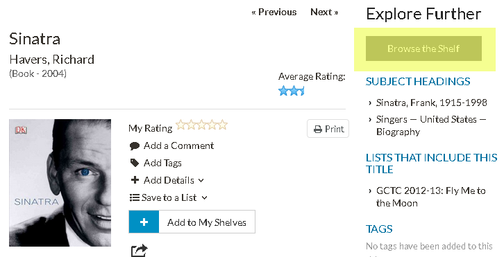
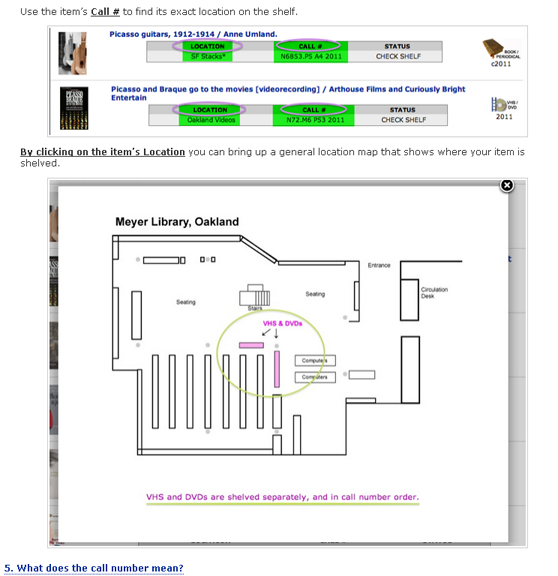
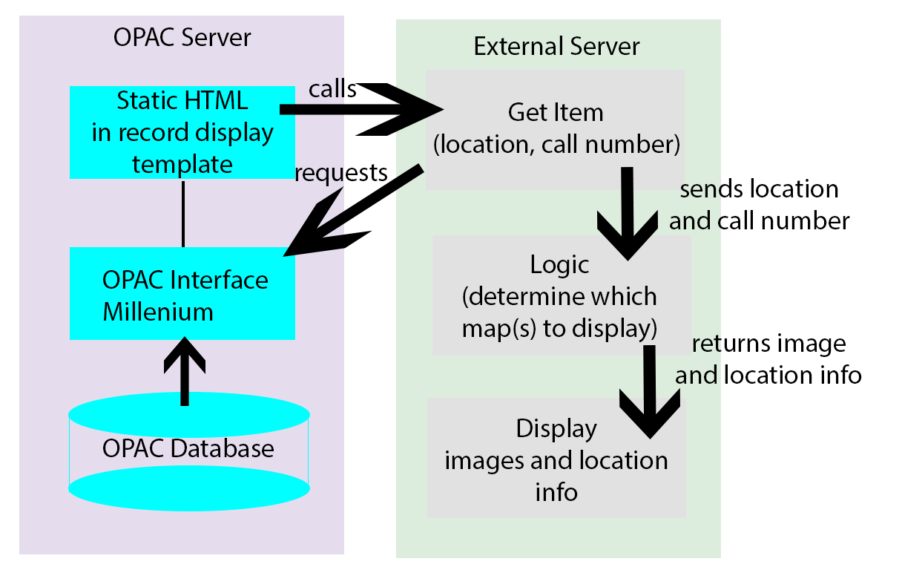
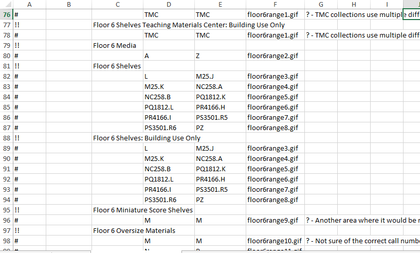
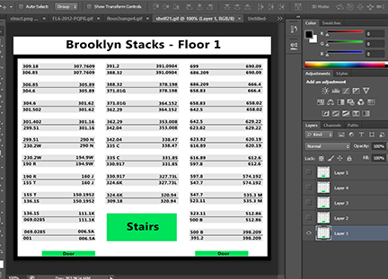
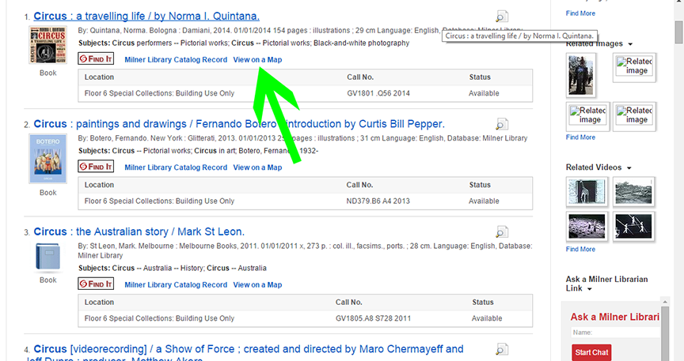
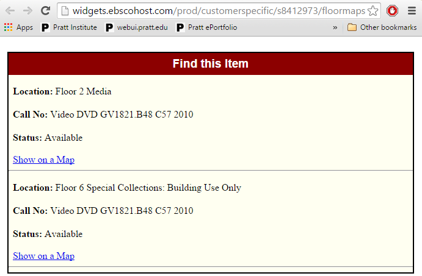
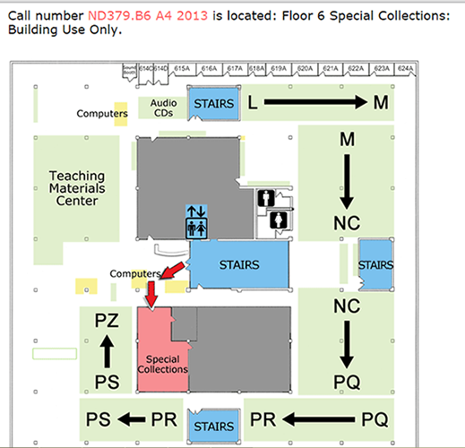

The Goal
Helping patrons find the location of physical items.
From the OPAC interface to the shelf
Making the connection conceptually and spatially

California College of the Arts

So why another approach?
Most implementations are abandoned due to:
- Items moving, maps becoming outdated
- Programmers, image editors too busy to keep updating files
- Changing Web or OPAC interfaces
Overcoming technical challenges
Items move, maps become outdated
- Automate updates
- Require minimal technical skill to perform updates
- Leave logic untouched during update process
Overcoming technical challenges
Changing Web or OPAC interfaces
- Modularity - make all modules independent from interfaces and each other
- Change modules and update automatically
- Building around the system rather than within it.
NaviStax
An open-source collection of scripts to address these issues
- For the DIYer
- Less reinvention of the wheel
- Moving towards full automation of the update process
The Pratt Implementation
Constraints
- No scripts in OPAC interface - only static HTML
- Everything must be hosted externally
- Must be independent of all other applications
The Pratt Implementation

The Pratt Implementation
Keeping it up-to-date
- Students and staff update call numbers
- Images updated with Photoshop automation - soon to be Python and GIMP
- Run generate.py and upload all files
The non-programmer's perspective

The image editor's perspective
- Change text in background image
- Use saved script to replace background in all images in folder

The sysadmin's perspective
- Run generate.py
- Upload files
- < 1 minute of work
Generate.py
The workhorse
- Run each call number in spreadsheet through formatting algorithm - adapted from Koha's sorting algorithm
- Output index.php or getMap.php file with each call number range as an object
- Append logic and display code
The Logic
For static HTML
- Each range is an object with call number, location, note attributes
- Put all location objects in an array
- Scrape the referring URL's HTML for call numbers and locations
- For each call number/location pair, compare the values to the values of objects in array
- When a match is found, display the image, location info, notes, and formatting
The EBSCO Discovery Service implementation

The EBSCO Discovery Service implementation

The EBSCO Discovery Service implementation

The EBSCO Discovery Service implementation
Constraints
- Scripts OK, but must work around many other scripts
- Everything must be hosted externally
- Extra testing required by EBSCO - but they're very helpful
- Currently proof of concept - yet to go live
The EDS Implementation
Keeping it up-to-date
- Set-up is more complex, but updating is simple
- Same spreadsheet and image scripts
- Run generate.py and upload all files - may need to send to EBSCO
The Logic
For EDS/VuFind
- Each range is an object with call number, location, note attributes. Put all location objects in an array
- JavaScript in EDS widget gets consortial ID # of item
- When "Find on a Map" button is clicked, intermediate interface is presented to show all copies
- When an item is chosen, ID # is sent to VuFind function in AJAX request
- Return value is parsed, values put into JSON
- Object is compared to objects in array and when a match is found, image and info are displayed
What's Next?
- Testing, going live with EDS version
- Python scripts for GIMP image updates
- GUI?
Want to get this off the ground at your library?
- The code and examples (a work in progress): GitHub Repo
- Plan 1 year beta period
- I'm happy to help. billmcmillin@gmail.com
Thank you to:
- Pratt Institute Libraries - Brian Samek, Kate McDermott, our amazing Grad Assistants
- Illinois State University - Anita Foster, Sally Gibson, Rong Li, Jean MacDonald, Ryan Peters, and many others
- The Engineers at EBSCO